import pandas as pd
import matplotlib.pyplot as plt
df_demo = pd.DataFrame({
"category": ["A", "B", "C", "D", "E", "F"],
"value": [120, 65, 75, 50, 30, 15]
})Session 05: Intro to Data Visualization
Pandas
Aggregating
Data Visualization
Introduction to Data Visualization
Data visualization is not only about making charts look attractive. It is about helping the reader understand patterns, comparisons, distributions, relationships, and trends with the least possible confusion.
A good visualization should answer a question clearly. A poor visualization may still contain the same data, but it forces the audience to work harder, notice the wrong things, or misunderstand the message.
In this section, we begin with the theory of visualization before applying it to the Instacart project.
NoteChart Chooser
Checkout the this dashbaord, which is going to help us to choose proper chart!
Why Do We Visualize Data?
Visualizations help us do the following:
- summarize large amounts of information
- identify patterns quickly
- compare categories
- detect trends over time
- notice unusual values or outliers
- communicate findings to others
A table is often precise, but a chart is often more effective for seeing structure.
A Good Visualization Starts with a Question
Before selecting a chart, we must ask:
- What exactly am I trying to show?
- Am I comparing categories?
- Am I showing a trend over time?
- Am I showing a distribution?
- Am I showing a relationship between variables?
- Am I highlighting part-to-whole structure?
The chart type must match the analytical question.
Matching the Question to the Visualization
| Analytical Question | Recommended Visualization |
|---|---|
| Compare categories | bar chart |
| Show trend over time | line chart |
| Show distribution of one variable | histogram |
| Show relationship between two numeric variables | scatter plot |
| Show proportions or shares | bar chart, stacked bar chart |
| Show ranking | sorted bar chart |
| Show matrix-like comparisons | heatmap |
| Show exact numbers only | table |
Main Principles of Good Visualization
- Clarity over decoration
- The main goal is communication, not visual effects.
- A chart should reduce cognitive effort, not increase it.
- Show the data, not the software: A visualization is not a place to demonstrate all formatting options. Extra effects often distract from the message.
- Use the simplest chart that answers the question: If a bar chart communicates the message, there is no reason to use a more complicated chart.
- Keep comparisons easy: The reader should be able to compare values quickly.
- Labels, scales, and titles matter A chart without clear labeling is difficult to interpret, even if the graph itself is correct.
Data-Ink Ratio
One of the most influential ideas in visualization comes from Edward Tufte: the data-ink ratio.
The idea is simple:
\[ \text{Data-Ink Ratio} = \frac{\text{Ink used to show data}}{\text{Total ink used in the graphic}} \]
Important
A good chart should maximize the amount of visual space used to communicate the data and minimize unnecessary visual elements.
More about data-ink here
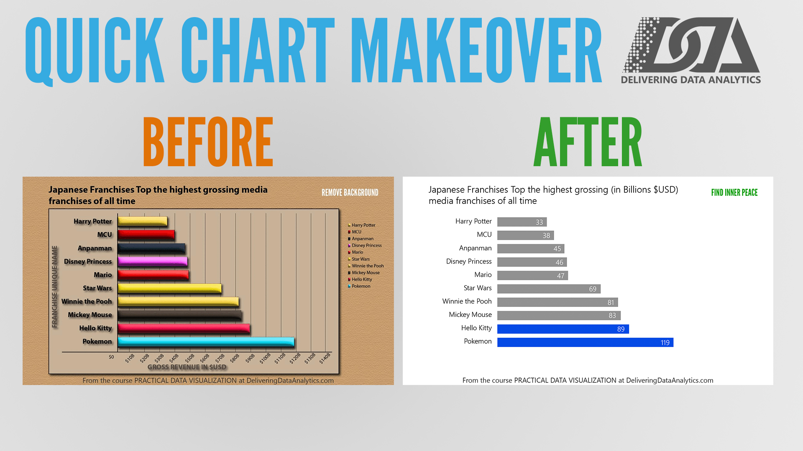
Unnecessary elements may include:
- heavy borders
- excessive gridlines
- decorative backgrounds
- 3D effects
- shadows
- distracting colors
- redundant labels
Tippurpose
This does not mean charts must be plain or ugly. It means every element should have a purpose.
Chartjunk
Tufte also warned against chartjunk.
Chartjunk refers to visual elements that do not improve understanding and often make it worse.
Examples:
- 3D bar charts
- gradient fills
- patterned backgrounds
- unnecessary icons
- overly bright colors
- duplicate legends and labels
Checkout the transformation of a chart with too much decoration into a cleaner version one more time:

Tip
About chartjunk
Poor Visualization vs Good Visualization
A useful learning approach is to compare bad and good versions of the same chart.
The data can remain identical. What changes is how well the chart communicates.
Example 1: Comparing Categories
Suppose we want to compare the sales or counts of several categories.
Poor choice
A pie chart with too many categories makes comparison difficult.
Why it is poor:
- angles are harder to compare than lengths
- labels become crowded
- small differences are difficult to see
Better choice
A sorted horizontal bar chart is usually better.
Why it is better:
- category names fit more easily
- lengths are easier to compare than angles
- sorting reveals ranking immediately
Demonstration
Poor visualization (unsorted bars):
plt.figure()
plt.bar(df_demo["category"], df_demo["value"])
plt.title("Poor Example: Unsorted Categories with Default Presentation")
plt.xlabel("Category")
plt.ylabel("Value")
plt.show()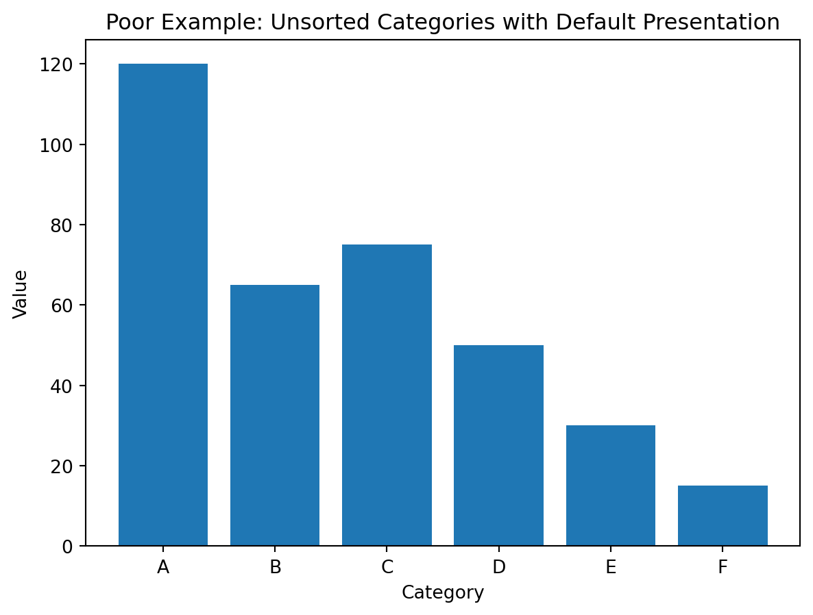
Better visualization (sorted horizontal bars):
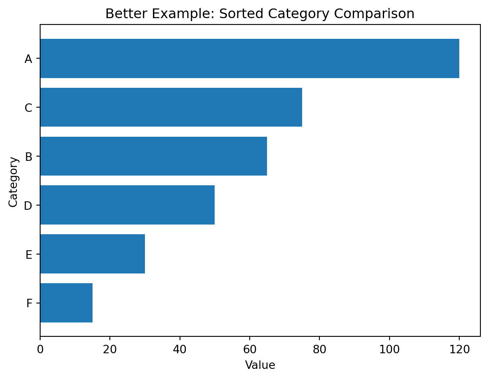
Example 2: Showing a Trend
Suppose we want to show change across time.
Poor choice
A bar chart with many time periods can become crowded and visually heavy.
Better choice
A line chart is better when the main goal is to show direction and trend over time.
Why it is better:
- continuous change is easier to read
- peaks and declines become more obvious
- the chart emphasizes movement rather than isolated bars
Demonstration
Poor visualization (bars for trend):
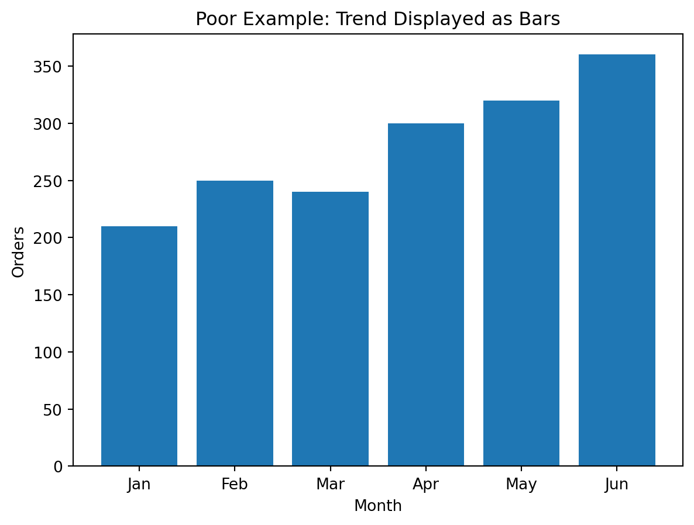
Better visualization (line for trend):
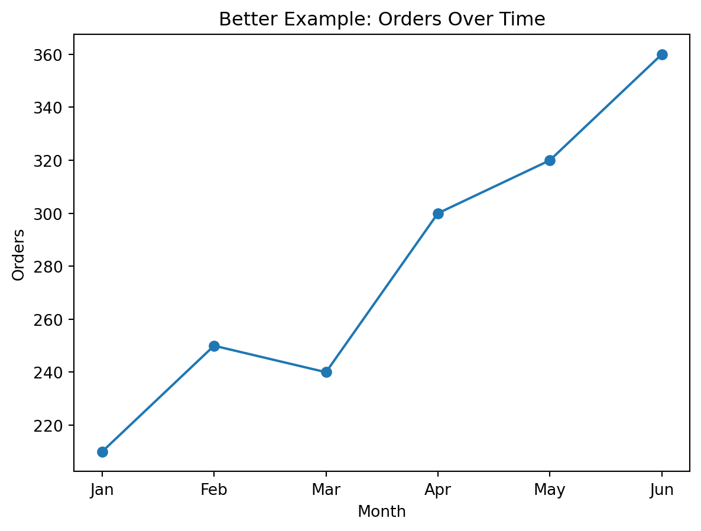
Example 3: Showing a Distribution
Suppose we want to understand how values are spread.
Poor choice
A bar chart of every unique numeric value often becomes cluttered and hides the overall shape.
Better choice
A histogram groups values into bins and helps reveal:
- skewness
- concentration
- spread
- possible outliers
Demonstration
import numpy as np
np.random.seed(42)
df_distribution = pd.DataFrame({
"income": np.random.normal(50000, 12000, 500)
})Poor visualization (individual bars):
sample_vals = df_distribution["income"].head(30).reset_index(drop=True)
plt.figure()
plt.bar(sample_vals.index.astype(str), sample_vals.values)
plt.title("Poor Example: Bar Chart for Distribution")
plt.xlabel("Observation")
plt.ylabel("Income")
plt.show()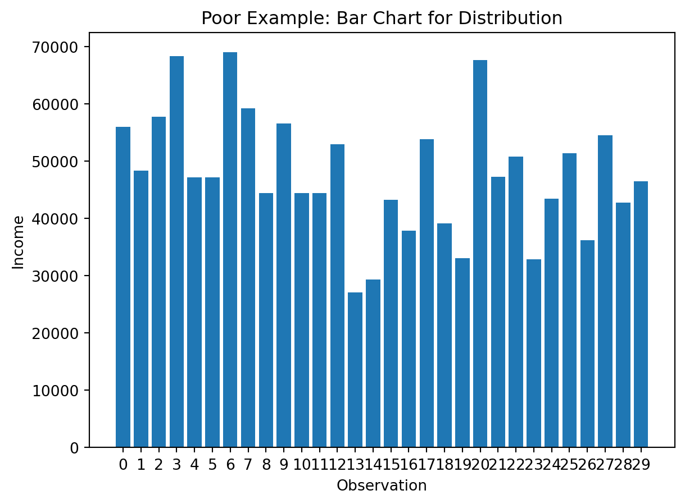
Better visualization (histogram):
plt.figure()
plt.hist(df_distribution["income"], bins=20)
plt.title("Better Example: Distribution of Income")
plt.xlabel("Income")
plt.ylabel("Frequency")
plt.show()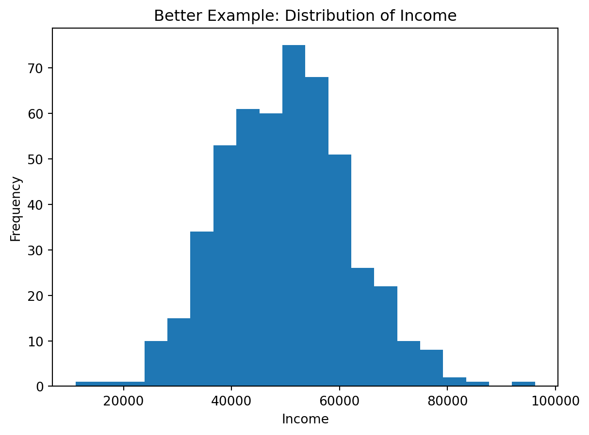
Example 4: Showing a Relationship
Suppose we want to see how two numeric variables move together.
Poor choice
Two separate bar charts do not show the relationship directly.
Better choice
A scatter plot makes the relationship visible.
It helps reveal:
- positive association
- negative association
- clusters
- outliers
Demonstration
np.random.seed(42)
x = np.random.normal(10, 2, 100)
y = x * 3 + np.random.normal(0, 3, 100)
df_relationship = pd.DataFrame({
"x": x,
"y": y
})Poor visualization (separate charts):
plt.figure()
plt.bar(range(len(df_relationship["x"].head(20))), df_relationship["x"].head(20))
plt.title("Poor Example: First Variable Shown Separately")
plt.xlabel("Observation")
plt.ylabel("x")
plt.show()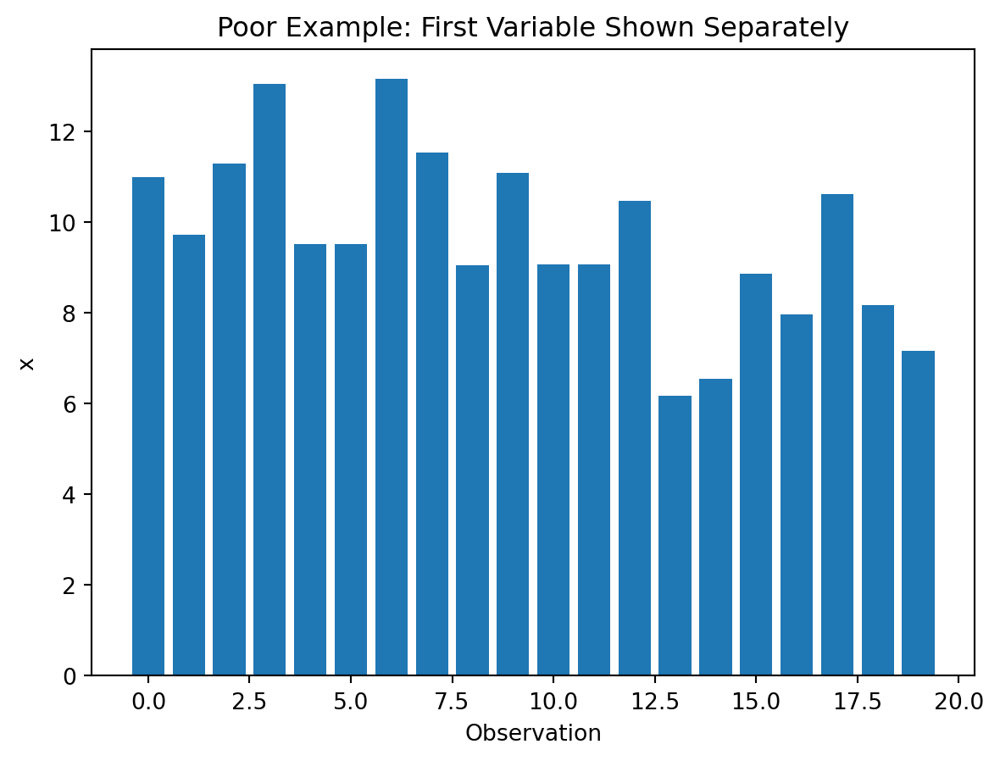
plt.figure()
plt.bar(range(len(df_relationship["y"].head(20))), df_relationship["y"].head(20))
plt.title("Poor Example: Second Variable Shown Separately")
plt.xlabel("Observation")
plt.ylabel("y")
plt.show()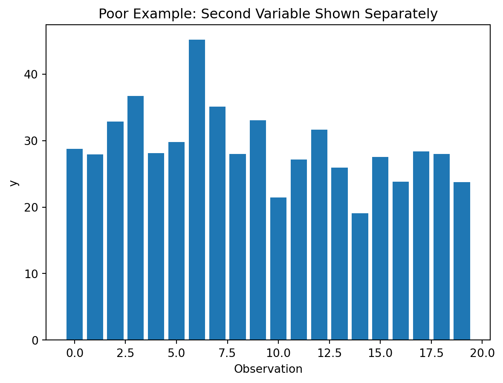
Better visualization:
plt.figure()
plt.scatter(df_relationship["x"], df_relationship["y"])
plt.title("Better Example: Relationship Between Two Variables")
plt.xlabel("x")
plt.ylabel("y")
plt.show()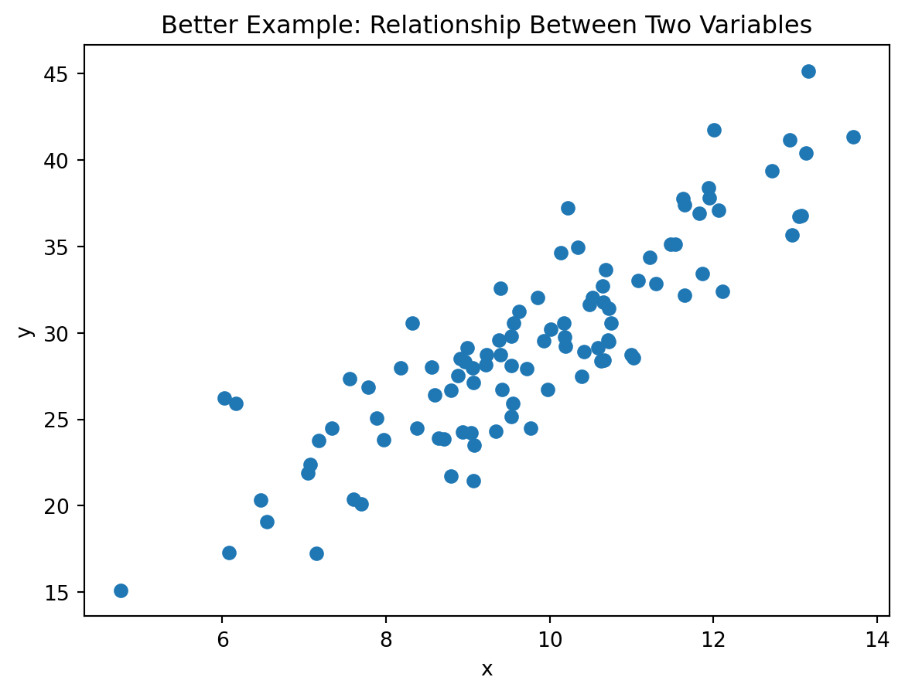
Example 5: Showing Proportions
Suppose we want to compare shares across groups.
Poor choice
A pie chart, especially with many slices or similar sizes, makes comparison difficult.
Better choice
A bar chart or normalized stacked bar chart is often clearer.
Demonstration
Poor visualization (many-slice pie chart):
plt.figure()
plt.pie(df_demo["value"], labels=df_demo["category"], autopct="%1.1f%%")
plt.title("Poor Example: Pie Chart for Category Comparison")
plt.show()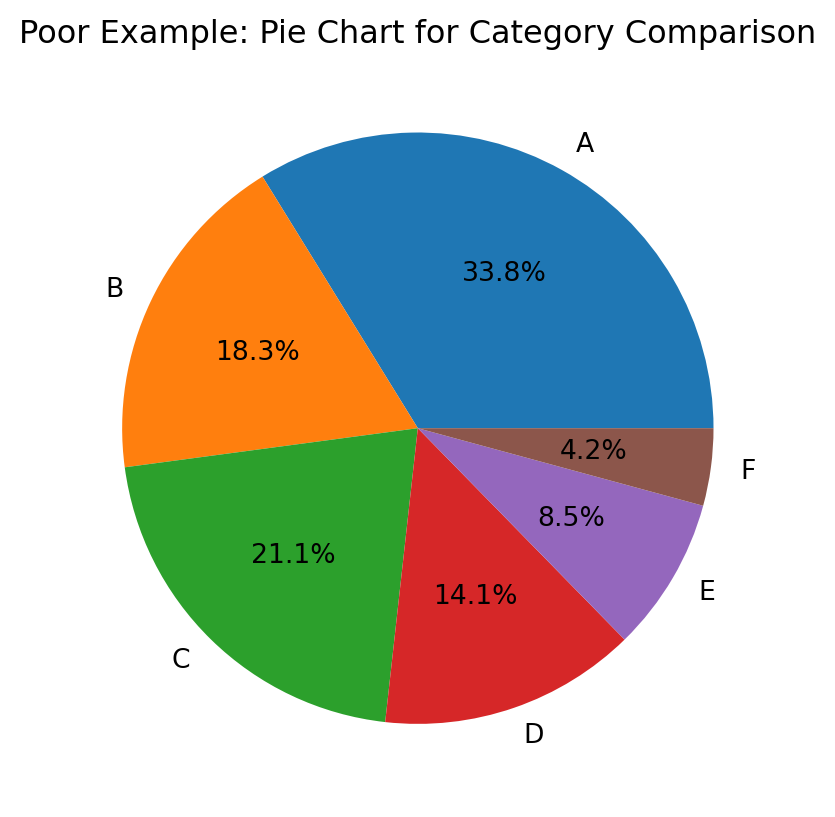
Better visualization (bar chart for proportions):
df_demo_sorted = df_demo.sort_values("value", ascending=False)
plt.figure()
plt.bar(df_demo_sorted["category"], df_demo_sorted["value"])
plt.title("Better Example: Bar Chart for Category Comparison")
plt.xlabel("Category")
plt.ylabel("Value")
plt.show()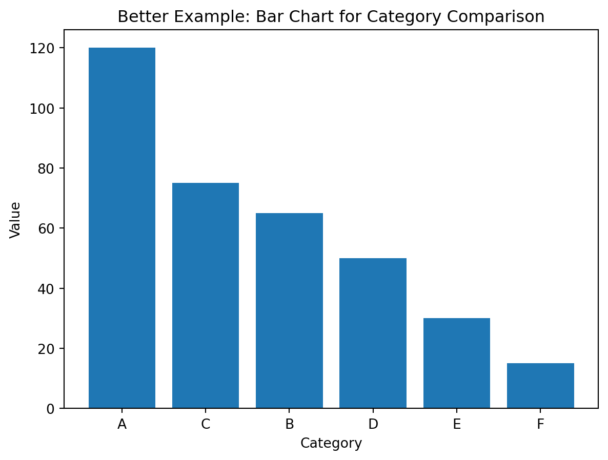
A Simple Decision Guide
flowchart TD
A[What do you want to show?] --> B[Compare categories]
A --> C[Trend over time]
A --> D[Distribution]
A --> E[Relationship]
A --> F[Composition]
B --> B1[Bar chart]
C --> C1[Line chart]
D --> D1[Histogram]
E --> E1[Scatter plot]
F --> F1[Bar chart or stacked bar chart]
Common Visualization Mistakes
Too many categories
If a chart has too many categories, the message becomes hard to read.
A common solution is:
- show top categories only
- group the rest into
Other - sort values meaningfully
Example
categories = [f"C{i}" for i in range(1, 21)]
values = [70, 68, 66, 64, 60, 58, 55, 50, 45, 40, 35, 30, 28, 26, 24, 22, 20, 18, 16, 14]
df_many = pd.DataFrame({"category": categories, "value": values})
top8 = df_many.nlargest(8, "value").copy()
other_sum = df_many.nsmallest(len(df_many) - 8, "value")["value"].sum()
df_top_other = pd.concat(
[top8, pd.DataFrame([{"category": "Other", "value": other_sum}])],
ignore_index=True
)
df_top_other = df_top_other.sort_values("value", ascending=False)
fig, ax = plt.subplots(1, 2)
ax[0].bar(df_many["category"], df_many["value"])
ax[0].set_title("Poor: Too Many Categories")
ax[0].tick_params(axis="x", rotation=90)
ax[1].bar(df_top_other["category"], df_top_other["value"])
ax[1].set_title("Better: Top Categories + Other")
ax[1].tick_params(axis="x", rotation=45)
plt.tight_layout()
plt.show()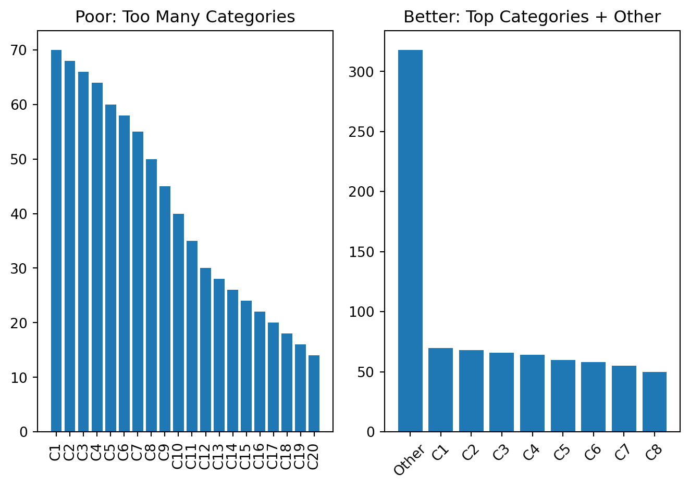
Too many colors
Color should support meaning, not distract attention.
Use color when:
- distinguishing groups
- highlighting one important category
- showing intensity or value
Avoid random color usage.
Example
df_color = pd.DataFrame({
"group": ["A", "B", "C", "D", "E", "F"],
"value": [40, 55, 43, 70, 62, 48]
})
random_colors = ["red", "lime", "blue", "gold", "magenta", "cyan"]
focus_colors = ["#A7C7E7", "#A7C7E7", "#A7C7E7", "#E07A5F", "#A7C7E7", "#A7C7E7"]
fig, ax = plt.subplots(1, 2)
ax[0].bar(df_color["group"], df_color["value"], color=random_colors)
ax[0].set_title("Poor: Random Colors")
ax[1].bar(df_color["group"], df_color["value"], color=focus_colors)
ax[1].set_title("Better: Intentional Highlight")
plt.tight_layout()
plt.show()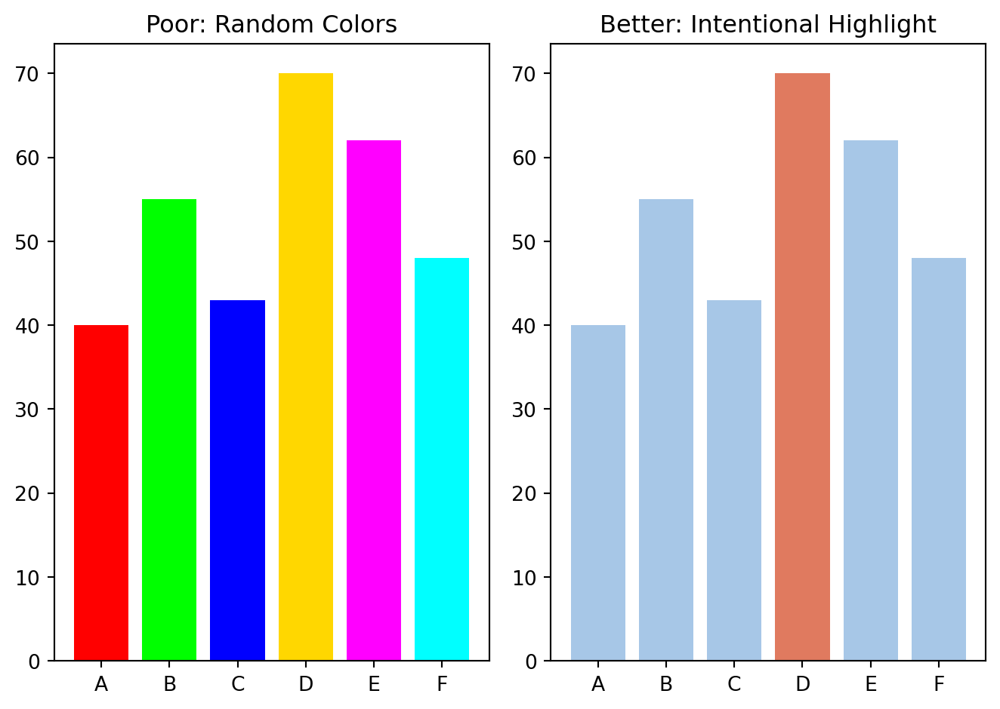
Unsorted categories
When categories are not sorted, comparison becomes harder.
Sorted bars usually improve readability.
Example
df_rank = pd.DataFrame({
"department": ["Produce", "Bakery", "Dairy", "Frozen", "Snacks", "Beverages"],
"orders": [820, 250, 640, 300, 710, 520]
})
fig, ax = plt.subplots(1, 2)
ax[0].bar(df_rank["department"], df_rank["orders"])
ax[0].set_title("Poor: Unsorted Categories")
ax[0].tick_params(axis="x", rotation=45)
df_rank_sorted = df_rank.sort_values("orders", ascending=False)
ax[1].bar(df_rank_sorted["department"], df_rank_sorted["orders"])
ax[1].set_title("Better: Sorted by Value")
ax[1].tick_params(axis="x", rotation=45)
plt.tight_layout()
plt.show()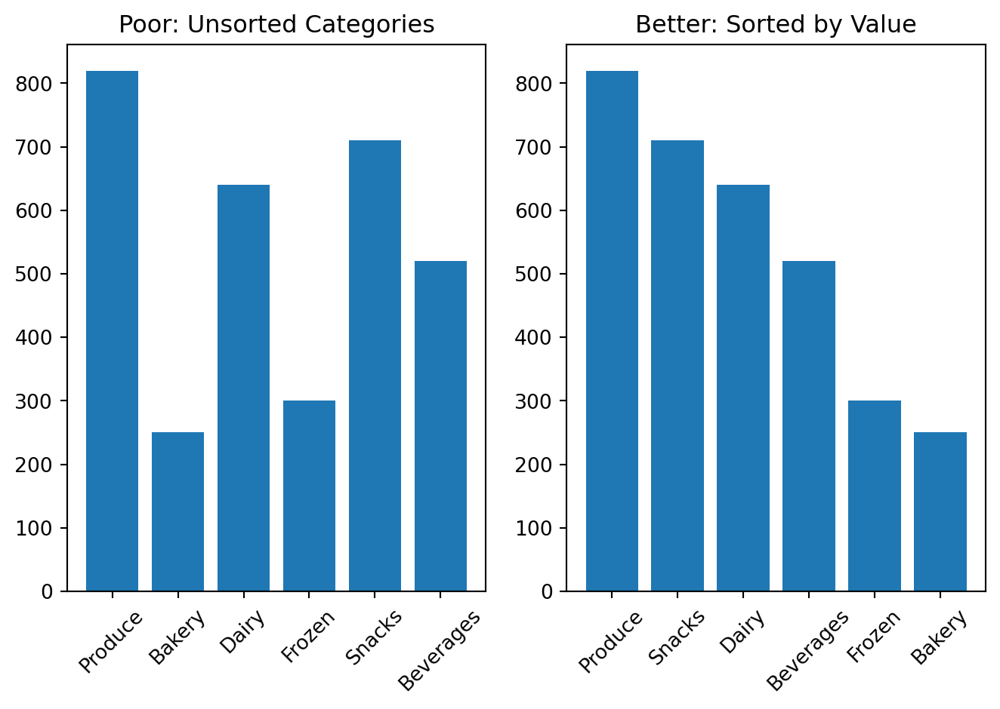
Misleading axes
Axis scales can distort perception.
Be careful with:
- truncated axes in bar charts
- inconsistent intervals
- unclear numeric scales
Example
df_axis = pd.DataFrame({
"model": ["Model A", "Model B"],
"accuracy": [91, 94]
})
fig, ax = plt.subplots(1, 2)
ax[0].bar(df_axis["model"], df_axis["accuracy"])
ax[0].set_ylim(88, 95)
ax[0].set_title("Poor: Truncated Y-Axis")
ax[1].bar(df_axis["model"], df_axis["accuracy"])
ax[1].set_ylim(0, 100)
ax[1].set_title("Better: Full Scale Context")
plt.tight_layout()
plt.show()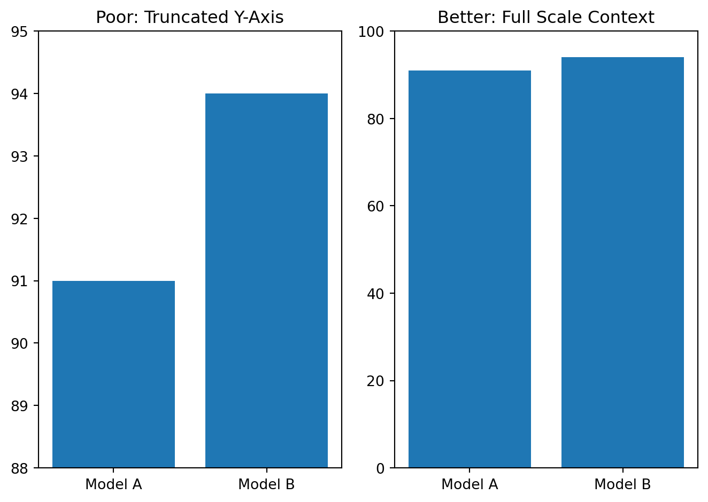
Overloaded labels
Too many labels can make a chart unreadable.
Keep only labels that help interpretation.
Example
months = ["Jan", "Feb", "Mar", "Apr", "May", "Jun"]
orders = [210, 230, 220, 260, 280, 310]
fig, ax = plt.subplots(1, 2)
ax[0].plot(months, orders, marker="o")
for i, val in enumerate(orders):
ax[0].text(i, val + 2, f"{val}\nOrders in month {months[i]}", ha="center", fontsize=8)
ax[0].set_title("Poor: Overloaded Labels")
ax[1].plot(months, orders, marker="o")
for i, val in enumerate(orders):
if i in [0, len(orders) - 1]:
ax[1].text(i, val + 2, str(val), ha="center", fontsize=9)
ax[1].set_title("Better: Essential Labels")
plt.tight_layout()
plt.show()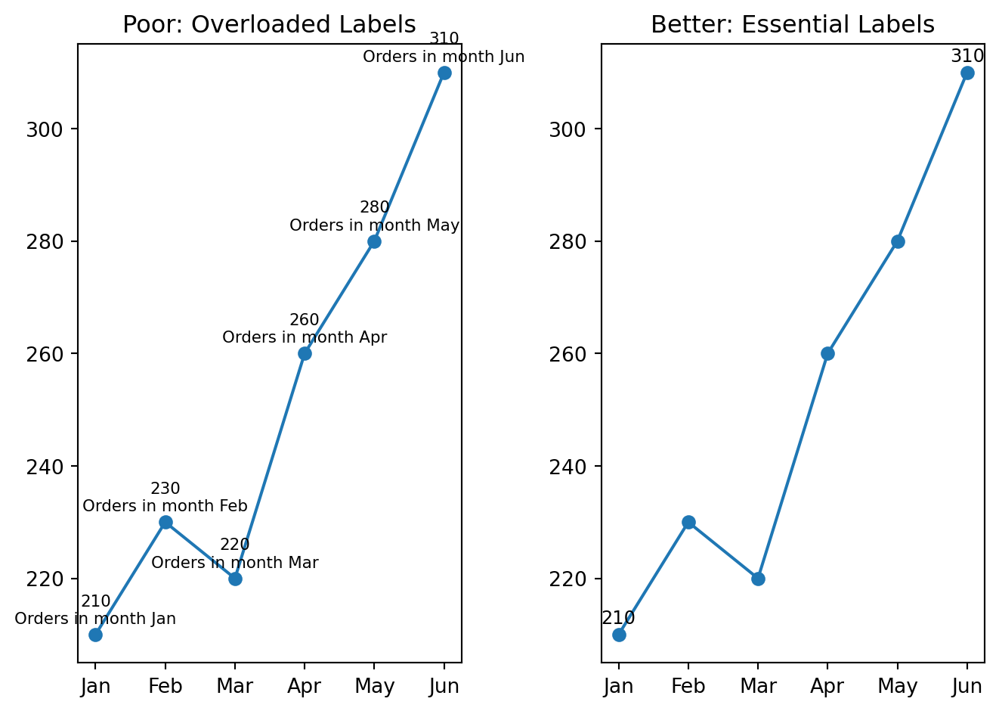
Practical Guidelines for Good Visualization
When building a chart, follow these guidelines:
- choose the chart type based on the analytical question
- remove unnecessary decoration
- keep titles informative and specific
- label axes clearly
- sort categories when ranking matters
- use color intentionally, not randomly
- avoid 3D effects and chartjunk
- prefer readability over novelty
A Good Workflow for Visualization
A useful workflow is:
- start from the analytical question
- choose the simplest chart that answers it
- remove unnecessary visual elements
- check whether the message is immediately clear
- revise the chart if the reader must work too hard to understand it
Grammar of Graphics
The Grammar of Graphics is a powerful framework for understanding how charts are constructed. It breaks down a visualization into fundamental components.
Grammar of Graphics is a systematic way to build visualizations by combining several independent components.
Instead of thinking only in chart names such as bar chart, scatter plot, or line chart, the Grammar of Graphics helps us understand the structure behind a visualization.
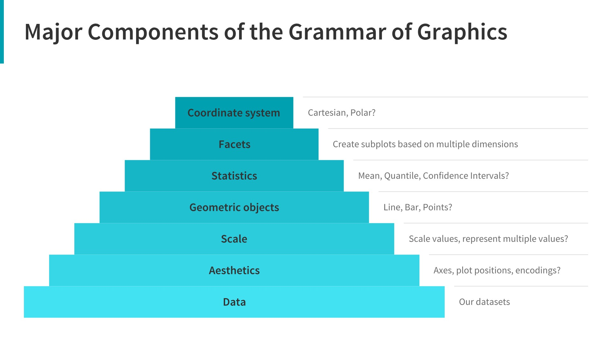
A chart is created by combining:
- data
- variables
- visual mappings
- geometric objects
- statistical transformations
- scales
- coordinate systems
- facets
- themes
In simple words:
\[ \text{Chart} = \text{Data} + \text{Mapping} + \text{Geometry} + \text{Layers} \]
Why Do We Need Grammar of Graphics?
When students start learning data visualization, they often memorize chart types:
- bar chart
- line chart
- scatter plot
- histogram
- box plot
However, this is not enough.
A better approach is to understand how data becomes a visual object.
For example, when we create a scatter plot, we are not simply choosing a chart type \(\rightarrow\) we are making several decisions:
- which variable goes to the
x-axis - which variable goes to the
y-axis - whether
colorshould represent a category - whether
sizeshould represent a numeric value - whether we need a
trend line - whether we need separate charts for different groups
This is the main idea behind the Grammar of Graphics.
Main Components of Grammar of Graphics
| Component | Meaning | Example |
|---|---|---|
| Data | The dataset used for visualization | customers, sales, transactions |
| Aesthetics | Mapping variables to visual properties | x-axis, y-axis, color, size |
| Geometry | The visual object used in the chart | points, bars, lines |
| Statistics | Data transformation before plotting | count, mean, regression line |
| Scales | How data values are shown visually | axis scale, color scale |
| Coordinates | The coordinate system | Cartesian, polar |
| Facets | Splitting one chart into smaller charts | one chart per region |
| Theme | Non-data design elements | title, font, gridlines |
Example: Scatter Plot
Suppose we have a customer dataset with the following variables:
| Variable | Description |
|---|---|
| age | Customer age |
| income | Customer income |
| segment | Customer segment |
| monthly_spend | Monthly spending |
| region | Customer region |
We want to visualize the relationship between age and income.
Using the Grammar of Graphics, we can describe the chart as follows:
| Grammar Component | Choice |
|---|---|
| Data | customer dataset |
| x-axis | age |
| y-axis | income |
| color | customer segment |
| size | monthly spend |
| facet | region |
| geometry | points |
So the chart can be described as:
\[ \text{Scatter Plot} = \text{Customers Data} + x(\text{age}) + y(\text{income}) + color(\text{segment}) + geom\_point() \]
Plotly Example
Dummy Data
df = pd.read_csv("https://raw.githubusercontent.com/hovhannisyan91/data_analytics_with_python/refs/heads/main/data/dummy_data.csv")
# Preview the data
df.head()| customer_id | age | region | segment | income | monthly_spend | |
|---|---|---|---|---|---|---|
| 0 | 1 | 56 | West | Medium Value | 63353.0 | 2411.0 |
| 1 | 2 | 69 | East | Medium Value | 64900.0 | 2688.0 |
| 2 | 3 | 46 | East | Low Value | 47074.0 | 1147.0 |
| 3 | 4 | 32 | North | High Value | 30267.0 | 1671.0 |
| 4 | 5 | 60 | North | High Value | 44233.0 | 2753.0 |
Important
givent that the virtual environment is already set up, you can install plotly with the following command in your terminal:
pip install plotlyimport plotly.express as px
fig = px.scatter(
data_frame=df, # data
x="age", # x aesthetic
y="income", # y aesthetic
color="segment", # color aesthetic
size="monthly_spend", # size aesthetic
facet_col="region", # facet
trendline="ols", # statistical layer
title="Relationship Between Customer Age and Income"
)
fig.show()How Plotly Arguments Match Grammar of Graphics
| Grammar Concept | Plotly Argument |
|---|---|
| Data | data_frame=df |
| x aesthetic | x="age" |
| y aesthetic | y="income" |
| color aesthetic | color="segment" |
| size aesthetic | size="monthly_spend" |
| facet | facet_col="region" |
| statistical layer | trendline="ols" |
| geometry | scatter points |
Example: Bar Chart
Suppose we want to compare total sales by region.
In Grammar of Graphics terms:
| Component | Choice |
|---|---|
| Data | sales dataset |
| x-axis | region |
| y-axis | total sales |
| geometry | bars |
| statistic | sum |
sales_by_region = (
df
.groupby("region", as_index=False)
.agg(
total_sales=("monthly_spend", "sum"),
avg_sales=("monthly_spend", "mean"),
number_of_customers=("customer_id", "count")
)
)fig = px.bar(
data_frame=sales_by_region,
x="region",
y="total_sales",
title="Total Sales by Region"
)
fig.show()This chart can be described as:
\[ \text{Bar Chart} = \text{Sales Data} + x(\text{region}) + y(\text{total sales}) + geom\_bar() \]
Example: Line Chart
Suppose we want to show how sales changed over time.
| Component | Choice |
|---|---|
| Data | sales dataset |
| x-axis | date |
| y-axis | sales |
| geometry | line |
daily_sales = (
df
.assign(
date=pd.date_range(
start="2026-01-01",
periods=len(df),
freq="D"
)
)
.groupby("date", as_index=False)
.agg(
sales=("monthly_spend", "sum"),
number_of_customers=("customer_id", "count"),
avg_sales=("monthly_spend", "mean")
)
)
# Round values for cleaner display
daily_sales["sales"] = daily_sales["sales"].round(0)
daily_sales["avg_sales"] = daily_sales["avg_sales"].round(2)
daily_sales.head()| date | sales | number_of_customers | avg_sales | |
|---|---|---|---|---|
| 0 | 2026-01-01 | 2411.0 | 1 | 2411.0 |
| 1 | 2026-01-02 | 2688.0 | 1 | 2688.0 |
| 2 | 2026-01-03 | 1147.0 | 1 | 1147.0 |
| 3 | 2026-01-04 | 1671.0 | 1 | 1671.0 |
| 4 | 2026-01-05 | 2753.0 | 1 | 2753.0 |
fig = px.line(
data_frame=daily_sales,
x="date",
y="sales",
title="Sales Trend Over Time"
)
fig.show()The chart can be described as:
\[ \text{Line Chart} = \text{Sales Data} + x(\text{date}) + y(\text{sales}) + geom\_line() \]
Choosing the Right Geometry
Different analytical questions require different geometries.
| Analytical Question | Recommended Geometry | Common Chart |
|---|---|---|
| Compare categories | Bars | Bar chart |
| Show trend over time | Lines | Line chart |
| Show relationship | Points | Scatter plot |
| Show distribution | Bars or boxes | Histogram, box plot |
| Show composition | Stacked bars or areas | Stacked bar, area chart |
| Compare groups | Facets or color | Small multiples, grouped charts |
A visualization is not just a chart type.
A visualization is a structured mapping between data and visual elements.
You should not only ask:
Which chart should I use?
They should also ask:
Which variables should be mapped to which visual features?
Practical Rule
Again, before creating a chart, answer three questions:
- What data do I have?
- Which variables are important?
- Which visual encoding communicates the message best?
Introduction to Matplotlib with the Instacart DataFrame
Now that we have created the final instacart DataFrame, we can begin the visualization part of the course using real project data rather than artificial examples.
In this section, we introduce matplotlib, which is one of the foundational visualization libraries in Python. It gives us direct control over chart creation and helps us understand the building blocks behind many other visualization tools.
We will start with simple visualizations based on the instacart dataset and connect each chart to a specific analytical question.
TipDocumentation
Matplotlib Documentation you can find here
Why Start with Matplotlib?
matplotlib is important because:
- it is one of the core plotting libraries in Python
- many other libraries are built on top of it
- it helps students understand how charts are constructed
- it gives more control over titles, labels, axes, and figure size
- it is useful for analytical reporting and notebook-based analysis
Even if students later use seaborn, plotly, or dashboard tools, understanding matplotlib remains valuable.
Matplotlib
Before plotting, we need to import the library.
import pandas as pd
import matplotlib.pyplot as pltIf the instacart.csv file has already been saved, we can load it as follows.
df_instacart = pd.read_parquet("../data/processed/instacart.parquet")
df_instacart.head()df_instacart = pd.read_parquet("../../lab/python/data/processed/instacart.parquet")
df_instacart.head()| order_id | order_number | order_dow | order_hour_of_day | days_since_prior_order | add_to_cart_order | reordered | product_name | prices | department | ... | Surname | Gender | state | Age | date_joined | n_dependants | fam_status | income | region | division | |
|---|---|---|---|---|---|---|---|---|---|---|---|---|---|---|---|---|---|---|---|---|---|
| 0 | 1187899 | 11 | 4 | 8 | 14.0 | 1 | 1 | Soda | 9.0 | beverages | ... | Nguyen | Female | Alabama | 31 | 2/17/2019 | 3 | married | 40423 | South | East South Central |
| 1 | 1187899 | 11 | 4 | 8 | 14.0 | 2 | 1 | Organic String Cheese | 8.6 | dairy eggs | ... | Nguyen | Female | Alabama | 31 | 2/17/2019 | 3 | married | 40423 | South | East South Central |
| 2 | 1187899 | 11 | 4 | 8 | 14.0 | 3 | 1 | 0% Greek Strained Yogurt | 12.6 | dairy eggs | ... | Nguyen | Female | Alabama | 31 | 2/17/2019 | 3 | married | 40423 | South | East South Central |
| 3 | 1187899 | 11 | 4 | 8 | 14.0 | 4 | 1 | XL Pick-A-Size Paper Towel Rolls | 1.0 | household | ... | Nguyen | Female | Alabama | 31 | 2/17/2019 | 3 | married | 40423 | South | East South Central |
| 4 | 1187899 | 11 | 4 | 8 | 14.0 | 5 | 1 | Milk Chocolate Almonds | 6.8 | snacks | ... | Nguyen | Female | Alabama | 31 | 2/17/2019 | 3 | married | 40423 | South | East South Central |
5 rows × 22 columns
First Look at the DataFrame
Before plotting, it is useful to remind ourselves what kind of table we are working with.
df_instacart.shape(1384706, 22)df_instacart.columnsIndex(['order_id', 'order_number', 'order_dow', 'order_hour_of_day',
'days_since_prior_order', 'add_to_cart_order', 'reordered',
'product_name', 'prices', 'department', 'aisle', 'First Name',
'Surname', 'Gender', 'state', 'Age', 'date_joined', 'n_dependants',
'fam_status', 'income', 'region', 'division'],
dtype='str')df_instacart.head()| order_id | order_number | order_dow | order_hour_of_day | days_since_prior_order | add_to_cart_order | reordered | product_name | prices | department | ... | Surname | Gender | state | Age | date_joined | n_dependants | fam_status | income | region | division | |
|---|---|---|---|---|---|---|---|---|---|---|---|---|---|---|---|---|---|---|---|---|---|
| 0 | 1187899 | 11 | 4 | 8 | 14.0 | 1 | 1 | Soda | 9.0 | beverages | ... | Nguyen | Female | Alabama | 31 | 2/17/2019 | 3 | married | 40423 | South | East South Central |
| 1 | 1187899 | 11 | 4 | 8 | 14.0 | 2 | 1 | Organic String Cheese | 8.6 | dairy eggs | ... | Nguyen | Female | Alabama | 31 | 2/17/2019 | 3 | married | 40423 | South | East South Central |
| 2 | 1187899 | 11 | 4 | 8 | 14.0 | 3 | 1 | 0% Greek Strained Yogurt | 12.6 | dairy eggs | ... | Nguyen | Female | Alabama | 31 | 2/17/2019 | 3 | married | 40423 | South | East South Central |
| 3 | 1187899 | 11 | 4 | 8 | 14.0 | 4 | 1 | XL Pick-A-Size Paper Towel Rolls | 1.0 | household | ... | Nguyen | Female | Alabama | 31 | 2/17/2019 | 3 | married | 40423 | South | East South Central |
| 4 | 1187899 | 11 | 4 | 8 | 14.0 | 5 | 1 | Milk Chocolate Almonds | 6.8 | snacks | ... | Nguyen | Female | Alabama | 31 | 2/17/2019 | 3 | married | 40423 | South | East South Central |
5 rows × 22 columns
This tells us that the dataset contains:
- order-level variables
- basket-level variables
- product-level variables
- customer-level variables
That means the same DataFrame can support many kinds of visualizations.
The Basic Plotting Workflow in Matplotlib
A simple plotting workflow usually includes:
- selecting or preparing the data
- creating a figure
- choosing a chart type
- adding a title
- labeling the axes
- displaying the chart
A very simple structure looks like this:
plt.figure()
plt.bar(x_values, y_values)
plt.title("Chart Title")
plt.xlabel("X Label")
plt.ylabel("Y Label")
plt.show()We will now apply this logic directly to the instacart data.
Example 1: Visualizing Orders by Day of Week
Analytical question: “On which days of the week are orders placed most frequently?”
This is a category comparison problem, so a bar chart is a reasonable first choice.
Preparing the data
orders_by_day = (
df_instacart[["order_id", "order_dow"]]
.drop_duplicates()
.groupby("order_dow")
.size()
)
orders_by_dayorder_dow
0 27465
1 19672
2 16119
3 15687
4 15959
5 17406
6 18901
dtype: int64We use .drop_duplicates() because the final instacart table is at the product-within-order level, and we want to count each order only once.
Creating the chart
orders_by_day = (
df_instacart[["order_id", "order_dow"]]
.drop_duplicates()
.groupby("order_dow")
.size()
)
plt.figure()
plt.bar(orders_by_day.index, orders_by_day.values)
plt.title("Number of Orders by Day of Week")
plt.xlabel("Day of Week")
plt.ylabel("Number of Orders")
plt.show()
What do we learn here?
This is our first real matplotlib chart using the project data.
It shows us:
- how to prepare grouped data before plotting
- how to build a bar chart
- how to add a title and axis labels
It also reinforces an important analytical lesson: when using a line-item dataset, we must think carefully about the correct level of aggregation
Example 2: Visualizing Orders by Hour of Day
Analytical question: At what hours are orders placed most frequently?
This is also a category comparison problem, but now the categories are hours.
Preparing the data
orders_by_hour = (
df_instacart[["order_id", "order_hour_of_day"]]
.drop_duplicates()
.groupby("order_hour_of_day")
.size()
)
orders_by_hour.head()order_hour_of_day
0 852
1 507
2 305
3 223
4 218
dtype: int64Creating the chart
orders_by_hour = (
df_instacart[["order_id", "order_hour_of_day"]]
.drop_duplicates()
.groupby("order_hour_of_day")
.size()
)
plt.figure()
plt.bar(orders_by_hour.index, orders_by_hour.values)
plt.title("Number of Orders by Hour of Day")
plt.xlabel("Hour of Day")
plt.ylabel("Number of Orders")
plt.show()
Example 3: Visualizing the Most Popular Departments
Analytical question: Which departments appear most often in the dataset?
This is again a category comparison problem, so a bar chart is appropriate.
Preparing the data
top_departments = df_instacart["department"].value_counts().head(10)
top_departmentsdepartment
produce 409087
dairy eggs 217051
snacks 118862
beverages 113962
frozen 100426
pantry 81242
bakery 48394
canned goods 46799
deli 44291
dry goods pasta 38713
Name: count, dtype: int64Creating the chart
top_departments = df_instacart["department"].value_counts().head(10)
plt.figure()
plt.bar(top_departments.index, top_departments.values)
plt.title("Top 10 Departments by Number of Purchased Items")
plt.xlabel("Department")
plt.ylabel("Number of Purchased Items")
plt.xticks(rotation=45)
plt.show()
Why do we rotate the labels?
The department names are longer than simple numeric categories. Rotating labels improves readability.
This is an important practical lesson in matplotlib:
a chart may be correct but still difficult to read if labels are not formatted well
Example 4: Improving Readability with a Horizontal Bar Chart
The previous chart is correct, but category labels can still feel crowded.
A horizontal bar chart is often better when category names are longer.
Creating the improved chart
top_departments_sorted = df_instacart["department"].value_counts().head(10).sort_values()
plt.figure()
plt.barh(top_departments_sorted.index, top_departments_sorted.values)
plt.title("Top 10 Departments by Number of Purchased Items")
plt.xlabel("Number of Purchased Items")
plt.ylabel("Department")
plt.show()
What is better here?
This chart is often easier to read because:
- the labels fit naturally
- the category ranking is easier to interpret
- the chart emphasizes comparison more clearly
Important
visualization is not only about plotting. It is also about choosing the clearest version of a chart.
Example 5: Visualizing the Distribution of Prices
Analytical question: How are product prices distributed?
This is not a category comparison problem. It is a distribution problem.
For distributions, a histogram is usually a better choice than a bar chart.
Preparing the data
df_instacart["prices"].describe()count 1.384618e+06
mean 1.411711e+01
std 6.802253e+02
min 1.000000e+00
25% 4.300000e+00
50% 7.400000e+00
75% 1.130000e+01
max 9.999900e+04
Name: prices, dtype: float64Creating the histogram
plt.figure()
plt.hist(df_instacart["prices"].dropna(), bins=10)
plt.title("Distribution of Product Prices")
plt.xlabel("Price")
plt.ylabel("Frequency")
plt.show()
Important
At first glance, the histogram appears to show only a single vertical bar. The chart is not wrong, but it is not yet informative.
The main reason is the presence of extreme values in the prices variable. A few unusually large observations stretch the horizontal axis so much that most regular prices become compressed into the first part of the plot.
This is a very common issue in visualization. Before interpreting a histogram, we should always ask whether the variable contains:
- extreme outliers
- data entry issues
- a long right tail
- unrealistic values compared with the rest of the distribution
There are several ways to handle this problem:
- using z-scores, where we remove values that are too many standard deviations away from the mean
- using quantiles, where we trim the extreme tail by keeping only values up to a chosen percentile
- setting axis limits, where we keep all data but visually zoom into the most informative range
- using a log scale, where we compress the scale to make very large values less dominant
In this section, we will use the second approach: quantiles.
The main idea is simple:
- calculate the upper percentile threshold
- keep only observations below that threshold
- redraw the histogram on the trimmed data
This does not mean the removed values are unimportant. It simply means that for the purpose of understanding the main distribution, we want to reduce the visual influence of extreme observations.
Alternative 1: Using the 99th percentile
This is a common and practical choice. It removes only the most extreme 1% of observations.
Step 1: Calculate the upper quantile
upper_limit = df_instacart["prices"].quantile(0.99)
upper_limitnp.float64(18.1)Step 2: Filter the data
df_prices_q = df_instacart[df_instacart["prices"] <= upper_limit]
df_prices_q["prices"].describe()count 1.370887e+06
mean 7.668451e+00
std 4.039330e+00
min 1.000000e+00
25% 4.200000e+00
50% 7.300000e+00
75% 1.120000e+01
max 1.810000e+01
Name: prices, dtype: float64Step 3: Plot the trimmed distribution
plt.figure()
plt.hist(df_prices_q["prices"].dropna(), bins=30)
plt.title("Distribution of Product Prices (Up to 99th Percentile)")
plt.xlabel("Price")
plt.ylabel("Frequency")
plt.show()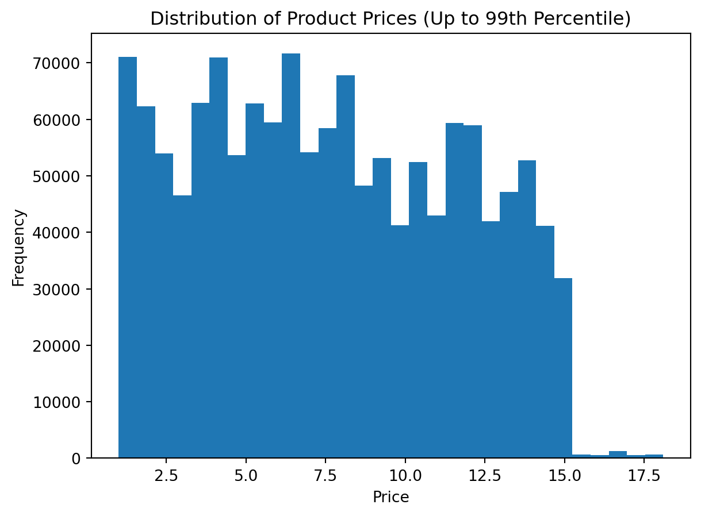
Alternative 2: Using the 95th percentile
This version is stricter. It removes a larger extreme tail and can make the central shape even clearer.
Step 1: Calculate the upper quantile
upper_limit_95 = df_instacart["prices"].quantile(0.95)
upper_limit_95np.float64(14.3)Step 2: Filter the data
df_prices_q95 = df_instacart[df_instacart["prices"] <= upper_limit_95]
df_prices_q95["prices"].describe()count 1.316686e+06
mean 7.373599e+00
std 3.843880e+00
min 1.000000e+00
25% 4.100000e+00
50% 7.100000e+00
75% 1.060000e+01
max 1.430000e+01
Name: prices, dtype: float64Step 3: Plot the trimmed distribution
plt.figure()
plt.hist(df_prices_q95["prices"].dropna(), bins=30)
plt.title("Distribution of Product Prices (Up to 95th Percentile)")
plt.xlabel("Price")
plt.ylabel("Frequency")
plt.show()
Alternative 3: Keeping all rows but zooming the x-axis
In this approach, we do not remove any values. Instead, we limit the visible range of the horizontal axis.
This is useful when:
- we want to preserve all observations
- we only want to improve readability
- we do not want to create a filtered copy of the dataset
plt.figure()
plt.hist(df_instacart["prices"].dropna(), bins=30)
plt.xlim(0, 50)
plt.title("Distribution of Product Prices (Zoomed X-Axis)")
plt.xlabel("Price")
plt.ylabel("Frequency")
plt.show()
Alternative 4: Using z-scores
Another common approach is to identify values that are far away from the mean in terms of standard deviations.
The z-score is calculated as:
\[ z = \frac{x - \mu}{\sigma} \]
where:
- \(x\) is the observation
- \(\mu\) is the mean
- \(\sigma\) is the standard deviation
A typical rule is to keep observations with absolute z-score less than 3.
mean_price = df_instacart["prices"].mean()
std_price = df_instacart["prices"].std()
z_scores = (df_instacart["prices"] - mean_price) / std_price
df_prices_z = df_instacart[z_scores.abs() < 3]
plt.figure()
plt.hist(df_prices_z["prices"].dropna(), bins=30)
plt.title("Distribution of Product Prices (Z-Score Filtered)")
plt.xlabel("Price")
plt.ylabel("Frequency")
plt.show()
Which method should we prefer?
There is no single universal answer. The right choice depends on the analytical goal.
| Method | When it is useful | Main limitation |
|---|---|---|
| Quantile filtering | When we want a robust and simple way to trim the extreme tail | The cutoff is relative, not based on domain knowledge |
| Z-score filtering | When the data is roughly symmetric and mean-based filtering is acceptable | Can be sensitive when the distribution is highly skewed |
| Axis limits | When we want to keep all data but improve readability | Extreme values still exist in the data and may still affect interpretation |
| Log scale | When values span multiple orders of magnitude | Harder for beginners to interpret |
What does this teach us?
This example introduces a second core chart type in matplotlib.
It shows:
- not every problem should be visualized with bars
- the chart type must match the analytical question
- histograms are useful for understanding spread, concentration, and skewness
Example 6: Visualizing Average Price by Department
Analytical question Which departments have the highest average prices?
This requires both aggregation and visualization.
Preparing the data
avg_price_by_department = (
df_instacart
.groupby("department")["prices"]
.mean()
.sort_values(ascending=True)
)
avg_price_by_departmentdepartment
snacks 4.272277
other 7.184457
dry goods pasta 7.388252
household 7.402065
canned goods 7.530263
beverages 7.660526
babies 7.682672
deli 7.768707
international 7.799126
frozen 7.801781
bakery 7.833023
pets 7.867823
pantry 7.955316
personal care 7.989259
produce 7.997862
breakfast 8.090261
alcohol 8.126044
bulk 8.211626
missing 8.599139
meat seafood 16.202349
dairy eggs 48.606962
Name: prices, dtype: float64Creating the chart
avg_price_by_department = (
df_instacart
.groupby("department")["prices"]
.mean()
.sort_values(ascending=True)
)
plt.figure()
plt.barh(avg_price_by_department.index, avg_price_by_department.values)
plt.title("Average Product Price by Department")
plt.xlabel("Average Price")
plt.ylabel("Department")
plt.show()
Why is this an important example?
It connects three ideas together:
- grouping data with Pandas
- summarizing with
.mean() - visualizing the result with
matplotlib
Example 7: Visualizing Reorder Rate by Region
Analytical question: Which regions have the highest reorder rate?
Preparing the data
reorder_rate_by_region = (
df_instacart
.groupby("region")["reordered"]
.mean()
.sort_values(ascending=True)
)
reorder_rate_by_regionregion
South 0.596392
Midwest 0.598615
West 0.599062
Northeast 0.602097
Name: reordered, dtype: float64Creating the chart
reorder_rate_by_region = (
df_instacart
.groupby("region")["reordered"]
.mean()
.sort_values(ascending=True)
)
plt.figure()
plt.barh(reorder_rate_by_region.index, reorder_rate_by_region.values)
plt.title("Reorder Rate by Region")
plt.xlabel("Reorder Rate")
plt.ylabel("Region")
plt.show()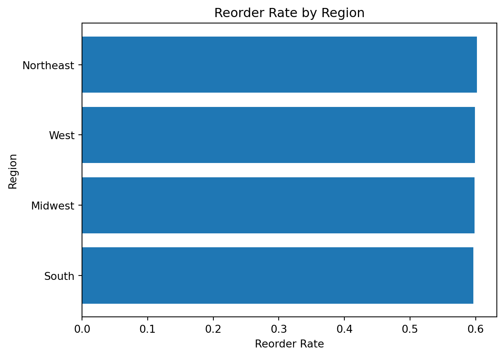
What do we learn here?
This chart introduces an important interpretation point:
a mean of a binary variable such as
reorderedcan be interpreted as a proportion or rate
That is a powerful idea for analytical visualization.
Example 8: Visualizing Relationship Between Age and Income
Analytical question: Is there a visible relationship between customer age and income?
For two numeric variables, a scatter plot is often the right starting point.
Preparing the data
customer_profile = df_instacart[
["First Name", "Surname", "Age", "income"]
].drop_duplicates()
customer_profile.head()| First Name | Surname | Age | income | |
|---|---|---|---|---|
| 0 | Linda | Nguyen | 31 | 40423 |
| 11 | Norma | Chapman | 68 | 64940 |
| 42 | Janet | Lester | 75 | 115242 |
| 51 | Peter | Villegas | 39 | 89095 |
| 60 | Anna | Allison | 32 | 88603 |
Creating the chart
customer_profile = df_instacart[
["First Name", "Surname", "Age", "income"]
].drop_duplicates()
plt.figure()
plt.scatter(customer_profile["Age"], customer_profile["income"])
plt.title("Customer Age and Income")
plt.xlabel("Age")
plt.ylabel("Income")
plt.show()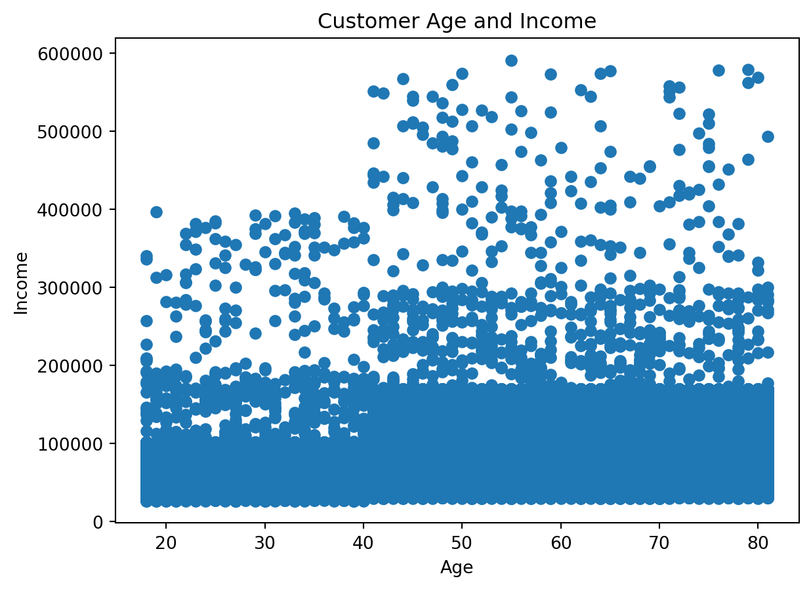
Why do we use a deduplicated customer table here?
Because the instacart DataFrame is at the product-within-order level, customer variables repeat many times.
If we want a customer-level relationship, we should remove repeated customer rows first.
This is an essential analytical lesson: the right chart depends not only on the variables, but also on the correct grain of the data
A Visual Summary of the Workflow
flowchart TD
A[Ask an analytical question] --> B[Prepare the data with Pandas]
B --> C[Choose the right chart type]
C --> D[Create the chart with Matplotlib]
D --> E[Interpret the result]